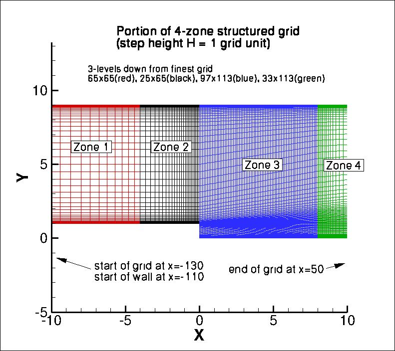

|
Langley Research CenterTurbulence Modeling Resource |
Return to: 2D Backward Facing Step Case Intro Page
Return to: Turbulence Modeling Resource Home Page
Grids - 2D Backward Facing Step Validation Case
A series of 5 nested 2-D grids, nondimensionalized by the step height H,
are provided. As structured grids, these are comprised of 4 zones, connected in
a one-to-one fashion (zones 1 and 2 can easily be combined into one zone; and zones 3 and 4
can easily be combined into one zone, if desired). All grid files have been gzipped.
Each coarser grid is exactly every-other-point
of the next finer grid, ranging from the finest 513 x 513, 193 x 513, 769 x 897, 257 x 897 grid
to the coarsest 33 x 33, 13 x 33, 49 x 57, 17 x 57 grid.
Note that with these grids the viscous near-wall region on the backside of the step is not resolved
to within a y+ of 1.
The following figure shows a portion of
the grid 3-levels down from the finest grid.

Note: be sure to use double precision when reading the grids!
STRUCTURED VERSIONS OF
GRIDS
PLOT3D Files
The structured PLOT3D grids are given in two different ways, as 2-D grids (x-y plane) or as 3-D grids (two
identical x-z planes, separated by a distance y=1,
giving one spanwise cell for all grid levels). You may use whichever is more convenient for your particular
application.
Format for the structured 2D grids is PLOT3D-type, formatted, MG, 2D (nbl=4) - note that you
must use double precision when reading! :
read(2,*) nbl
read(2,*) (idim(n),jdim(n),n=1,nbl)
do n=1,nbl
read(2,*) ((x(i,j,n),i=1,idim(n)),j=1,jdim(n)),
+ ((y(i,j,n),i=1,idim(n)),j=1,jdim(n))
enddo
Download the 2-D version of the grids in PLOT3D format here:
Format for the structured 3D grid is PLOT3D-type, formatted, MG, 3D (nbl=4, and idim in this case is 2) - note that you must use double precision when reading! :
read(2,*) nbl
read(2,*) (idim(n),jdim(n),kdim(n),n=1,nbl)
do n=1,nbl
read(2,*) (((x(i,j,k,n),i=1,idim(n)),j=1,jdim(n)),k=1,kdim(n)),
+ (((y(i,j,k,n),i=1,idim(n)),j=1,jdim(n)),k=1,kdim(n)),
+ (((z(i,j,k,n),i=1,idim(n)),j=1,jdim(n)),k=1,kdim(n))
enddo
Download the 3-D version of the grids in PLOT3D format here:
If desired, example Neutral Map Files associated with 3-D version of the grids are given here (these files specify grid indices associated with each boundary condition - see The Neutral Map File):
CGNS Files
The structured grids are also available as CGNS files (3-D versions only, with two identical x-z planes, separated by a distance y=1, giving one spanwise cell for all grid levels). Note that the BCs written inside the CGNS files are for guidance only, and may not reflect the appropriate BCs needed for your application. To read/write CGNS files, (free) software may be necessary if your pre/post-processing tools do not already handle it. See: CGNS Website for details.
Download the 3-D version of the grids in CGNS format (gzipped) here:
UNSTRUCTURED VERSIONS OF GRIDS
CGNS Files
The unstructured versions of the same grids are all given as CGNS files. Note that the BCs written inside the CGNS files are for guidance only, and may not reflect the appropriate BCs needed for your application. To read/write CGNS files, (free) software may be necessary if your pre/post-processing tools do not already handle it. See: CGNS Website for details.
The unstructured grids are all given as 3-D grids (two identical x-z planes, separated by a distance y=1, giving one spanwise cell for all grid levels). They are given here only as hexahedra (quadrilaterals in the x-z plane).
Download the unstructured CGNS grids (gzipped) as 3-D hexahedra (quadrilaterals in x-z plane) here:
Return to: 2D Backward Facing Step Case Intro Page
Return to: Turbulence Modeling Resource Home Page
Responsible NASA Official:
Ethan Vogel
Page Curator:
Clark Pederson
Last Updated: 05/13/2019